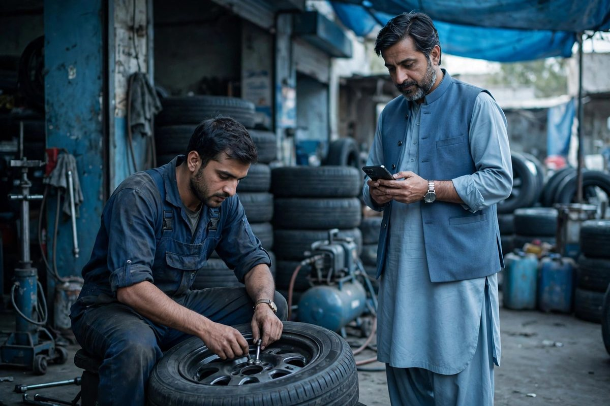

Chowk Azam Sells to People Who Are Passing Through
Chowk Azam sits on the road between Layyah and the wider region, and a large part of its trade comes from movement: buses stopping for food, trucks needing tyres or repairs, families breaking a journey, and traders moving goods. These customers share one habit. They decide from their phone, in the vehicle, minutes before they stop.
That makes Chowk Azam a special local SEO case. Your customer is not comparing you with the shop across the street over several days. He is looking at a map, right now, and choosing between the three or four names Google shows him. Being one of those names, with the right details, is the whole game.

The Three Details Travellers Check First
- Open now. If your profile says closed, or shows hours from two years ago, travellers skip you without a second thought. Keep hours exact, and update them for Ramzan, Eid and seasonal changes.
- On the way. Your map pin must sit on your actual premises, on the correct side of the highway, so directions bring the customer to your door rather than past it.
- Looks trustworthy. Clear photos of your food, your workshop or your rooms, plus recent reviews, convince a stranger to stop at an unfamiliar place.
Beyond these, the basics still apply: correct category, real phone number, services listed one by one. A tyre shop should list puncture repair, wheel balancing and the vehicle types it handles. A restaurant should list its cuisine type and seating. Specifics match the specific searches travellers type. The full walkthrough is in the Google Business Profile optimization guide.
Your Local Customers Search Differently, Serve Both
Chowk Azam also has its own residents, students and surrounding villages, and their searches are the everyday kind: mobile shops, tailors, clinics, academies, general stores. A business that only thinks about highway trade misses the steady local base, and one that ignores the highway leaves the easiest customers to competitors.
A simple website handles both audiences: one page aimed at travellers, explaining where you are on the road and what you offer around the clock, and service pages for local needs. Keep the site fast and the phone number tappable, because both audiences are on phones. Good keyword research separates these two kinds of searches so each page speaks to one audience clearly.

Reviews From People You Will Never See Again
Travellers leave reviews too, and they carry weight precisely because they are strangers with no loyalty. Make the ask easy: a small printed card at the counter with your Google review link or QR code, offered politely after good service. Reply to these reviews as you would to a local's; future travellers read your replies when deciding whether your place is clean, honest and safe to stop at.
As always, only genuine reviews. Fake praise collapses quickly when real travellers describe a different experience, and Google can suspend the profile entirely.
Working With an SEO Service Based in Layyah
Zaheer Seo Expert is based in Layyah, a short distance from Chowk Azam, and has no office in Chowk Azam itself. We serve Chowk Azam businesses remotely: your profile, website and monthly SEO are managed online, and we discuss everything by phone or WhatsApp. The page for SEO services in Chowk Azam gives the details, and the local SEO service page describes the monthly work.
Where Chowk Azam Businesses Lose Passing Trade
- Outdated hours, so the profile shows closed during your busiest evening hours.
- A pin placed at the chowk center rather than on the actual shop, sending drivers the wrong way.
- No photos, so travellers choose the place they can see over the one they cannot.
- No review routine, leaving a thin profile while a competitor collects traveller reviews weekly.
- A website with no mention of the highway, parking or late opening, the very things travellers search for.
The traffic past your door is already searching. Local SEO simply makes sure that when it searches, it finds you: open, nearby and trusted. The neighbouring guide for SEO for Mianwali businesses covers the same foundations for a larger city market.
Late Hours and Honest Information Win the Night Traffic
Highway trade does not end at sunset. Buses run late, trucks drive through the night, and a traveller with a puncture or an empty stomach at midnight searches with one filter in mind: what is open near Chowk Azam right now. If your business genuinely serves late hours, say so precisely on your profile and your website, and keep the claim true. If you close at ten, an honest ten o'clock earns better reviews than a false "open 24 hours" that sends a tired driver to a dark shutter.
Night customers also rely on photos more than anyone: a lit shopfront, a clean dining area, a workshop with lights on tells them the place is real and safe to stop at. Add a few evening photos, mention parking and lighting if you have them, and make sure your phone is answered during the hours you advertise. These small details decide the night searches, and night searches are often the least competitive of the whole day, because most of your rivals have set their profiles carelessly and gone home.
Frequently Asked Questions
Most of my customers are travellers passing through Chowk Azam. Does local SEO still apply?
It applies even more. A traveller chooses from the map results in front of him at that moment. If your restaurant, tyre shop or hotel appears with good reviews, clear photos and an open-now status, you win a customer who would otherwise drive past.
What profile detail matters most for a highway business?
Accurate hours, including whether you are open late or around the clock, and a correct location on the correct side of the road. Travellers filter by what is open and reachable right now.
Can a dhaba or small hotel really compete with big names on the highway?
For the searches made within a few kilometres of Chowk Azam, yes. Distance is a major factor, and a complete profile with genuine reviews often beats a famous name that is farther away or badly listed.
Do you have an office in Chowk Azam?
No. Zaheer Seo Expert is based in Layyah and serves Chowk Azam remotely. All profile and website work is handled online and by phone.
Want More Customers From Google?
Call 0327 7350830 or email seozaheer14@gmail.com. Zaheer Seo Expert, Layyah - Rajan Shah Road, Rana Nagar, Chak 116 TDA, Pakistan. Open 24 hours.
Get Your SEO Strategy →